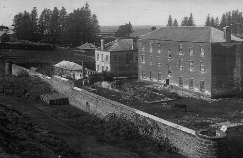
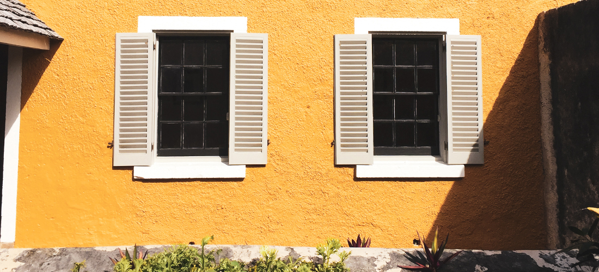

Commissariat Store
Locations of KAVHA
When was it built?
This building was built to replace the two commissariats that had been near the waterfront, and it was built in 1835. The stores near the pier had been damaged in a big flood and Colonel Anderson knew that he had to keep the stores safe. The building has three storeys, with a basement at ground level.
Its use today
The second and lower main floors are now the All Saints Church, the top floor holds archives and the basement is now the Commissariat Store Museum.
Many of the items on show are of archaeological interest, showing the four settlements of Norfolk Island, from the Polynesian settlement to the present day and there is much of interest to see.
Norfolk Island has a long and interesting history and we are still finding items that show the way of life that people led. The everyday items that people used in their homes tell the historians a great deal about the way they adapted to life on the island, as they often had to make items that they could not just buy in the shops. The settlers also brought with them many beautiful, precious or useful things that they needed. When they came to the island many of them knew that they would be here for a long time as travel was difficult.
